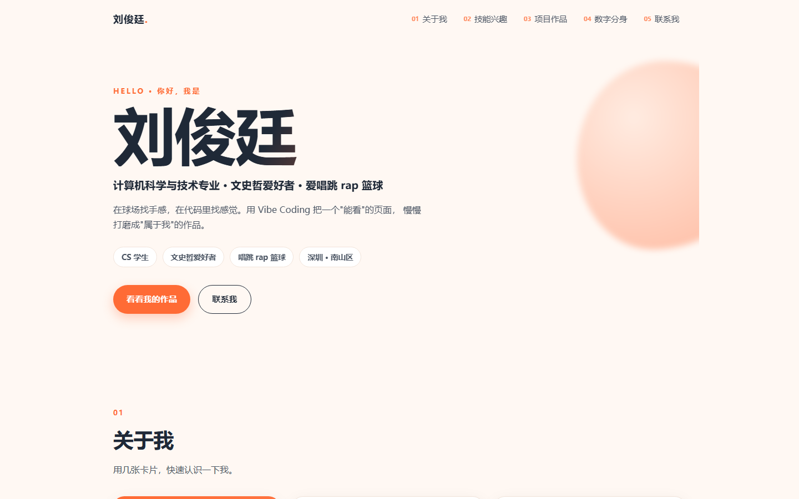
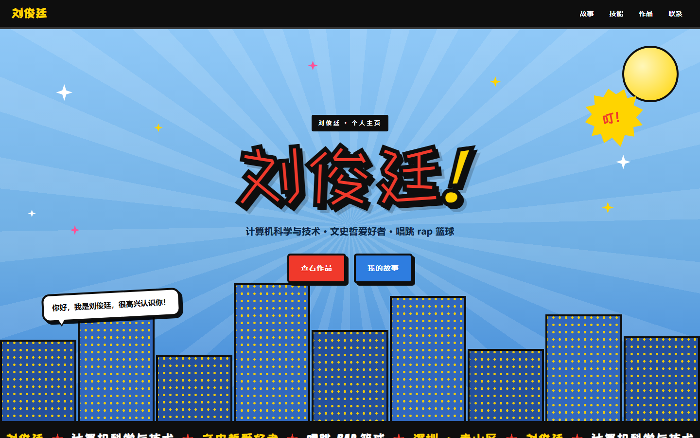
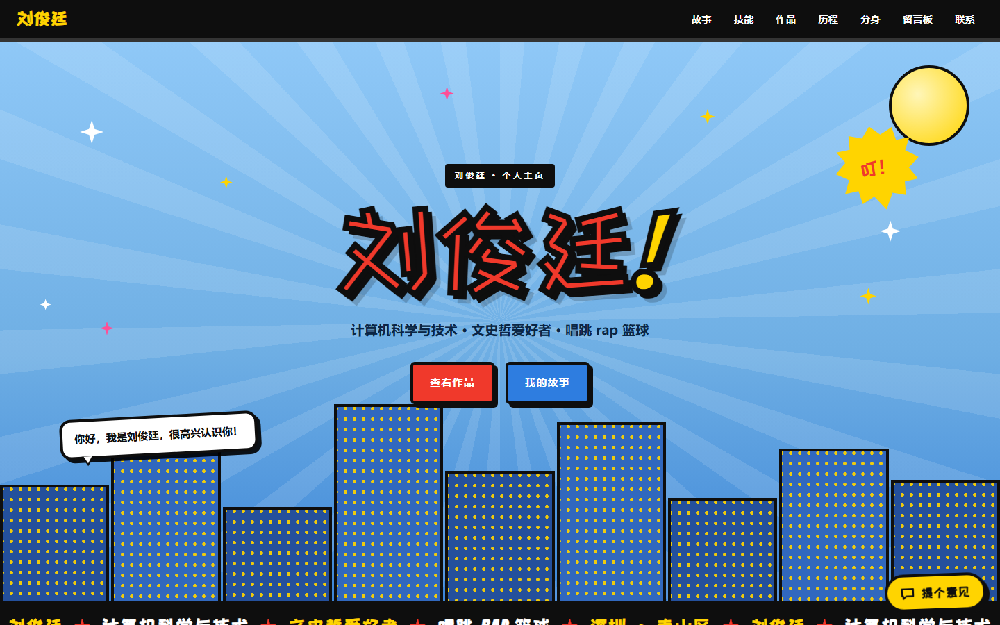
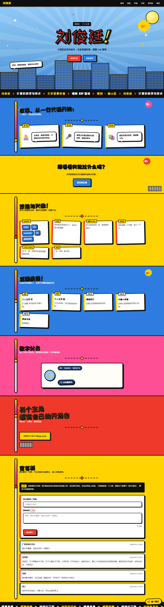
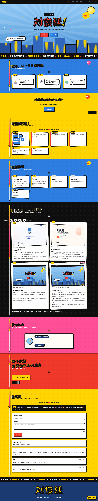

刘俊廷 · 计算机科学与技术在线地址：https://handsome-liujunting.github.io/Project-based-curriculum/代码仓库：https://github.com/handsome-liujunting/Project-based-curriculum单文件离线版：outputs/personal-homepage-v35-standalone/index.html（双击即可打开，无需联网）报告日期：2026-10-06 ｜ V4 提交：7a76419 ｜ 上线状态：线上 Pages 当前仍是 V3.5（6bb6ec2），V4 已在本地提交但尚未推送；推送后同一链接即变为 V4
一个纯静态的个人主页：手写 HTML/CSS/JS，零框架、零构建、零第三方脚本。四个版本的改动全部留在同一个仓库里，每一版都有截图、有理由、有验证。
| 项目 | V4 现状 |
|---|---|
| 页面结构 | 8 个 section、39 个 id、18 个 article 卡片 |
| 样式 / 脚本 | 5 个 CSS、5 个 JS（全部本地文件，无 CDN） |
| 字体 | 自托管 2 个开源子集（站酷快乐体 44952 B / 432 汉字；Bangers 11072 B / 64 字符） |
| 图片 | 4 张版本缩略图（合计约 236 KB），全站仅此 4 张位图 |
| 单文件离线版 | 513909 B，4/4 图片内联为 data URI，断网无断图 |
| 结构校验 | verify_v35.ps1 -SiteOnly → FAIL count = 0（10 组结构/契约/安全检查） |
| 版本 | 日期 | 提交 | 一句话 | 主要改动 |
|---|---|---|---|---|
| V1 | 2026-09-05 | f7aa66e | 先让它能打开 | 语义化 HTML + 响应式 CSS，蓝色主色，卡片说明"我是谁、我会什么、怎么找我" |
| V2 | 2026-09-10 | 4062811 | 换成卡片化排版 | 卡片化布局 + 暖橙配色，导航加编号，首屏写正经自我介绍，标签换成"文史哲爱好者" |
| V3 | 2026-09-12 | dcdb257 | 整站重画成美漫风 | 粗描边、网点、对话气泡、放射背景、楼群剪影、跑马灯；自托管两款开源字体 |
| V3.5 | 2026-09-21 | 6bb6ec2 | 不动设计，先加通道 | 只加反馈入口与公开留言板（接真后台），方便与 V3 逐项对照 |
| V4 | 2026-10-06 | 7a76419 | 加上收意见的入口 | 迭代历程区块 + 版本号推到 V4 + 反馈可用性修复 + 作品区口径修正 |
四个版本的首屏放在一起看：



这次改版的 Before / After（同一口径拍摄：1440×900 视口 + 首屏冻结，可逐块对照）：


左：V3.5（2026-09-21）｜右：V4（2026-10-06）。新增的是深色的"历程"区块（放 V1–V4 的首屏与理由）、右下角的"提个意见"悬浮按钮，以及导航里的"历程"入口；其余区块结构基本沿用。
为什么每一版要这么改：
| # | 功能 | 出现在 | 想法来源 | 解决了什么 |
|---|---|---|---|---|
| 1 | 迭代历程区块（V1–V4 首屏 + 改了什么/为什么 + 提交号） | V4 | 课件 V4"好迭代 = 更好的决定，而不是更多改动"；作业要求报告能证明过程 | 把"我改过什么、为什么改"从口述变成访客能自己看的东西 |
| 2 | 反馈入口「提个意见」（私密，只有我能看到） | V3.5 | 课件 V4 闭环第一步 Collect + "收集真实反馈"的要求 | 有一个真能收到意见的通道，而不是等别人主动说 |
| 3 | 公开留言板 | V3.5 | 个人主页需要"有人来过"的信号；课件 V3 的"静态托管 + 后台"练习 | 访客能匿名留一句话，墙上只读、公开 |
| 4 | 反馈自动附带网站版本号 | V3.5 / V4 修正 | 自测：表单里的版本号还停在 V3.5，收到的意见会贴错版本 | 每条意见都自带来源版本，版本号只留一个来源 |
| 5 | 错误提示中文化（friendly(err)） | V4 | 自测：后台不可达时访客看到英文 Failed to fetch | 访客看到的是"网络好像不通，不影响别的"，原始信息只留给 console |
| 6 | 作品区口径修正 | V4 | 自测：作品区把"同一个项目"当两个作品，且文案停在 V2 | 作品列表与迭代历程不再互相打脸；数字分身如实标注为"本地关键词匹配、不联大模型" |
| 7 | 字体子集重建 | V4 | 自测：新文案里出现缺字（方框） | 432 个汉字全在子集内，仍不依赖外部字体服务 |
| 8 | 单文件离线版 | V3.5 / V4 重导 | 交付与演示需要"离线也能开、也能发" | 513909 B 单文件，4/4 图片内联，断网无断图 |
刻意没做的（写了理由，见 docs\V4-反馈决策表.md）：
supabase-js：前端只做"写一条、读一列"，原生 fetch 足够；引入 SDK 只为省几行代码，不值得多一个依赖。> 这一节按"现象 → 排查 → 根因 → 解决 → 验证"写，包括我自己踩的坑和工具骗我的那两次。
C1. 手机端"导航和标题被裁掉了"（假缺陷）
docScrollW=375、overRight=none、7 项导航全部可见。outputs/_work/shots/badshots/ 作为证据。v4-phone.png、v4-phone-iterations.png 均为真 375×812。C2. 整页截图里首屏被拉得很长
.hero）高度异常。.hero { min-height: 90vh } —— 首屏高度跟随视口，超高视口必然撑高。min-height:0; height:725px），其余区块仍按真实文档流排版。docScrollH=6943、首屏 810（90vh）；窗口口径（probe_v35.ps1，视口 1410×805）实测 iterations=2958 / doc=6858。两者只差首屏那 85px，历程及其后所有区块的纵向坐标完全一致。C3. 单文件版导出后"图片没内联 / 断图"
export_single_file.ps1 报 image inlining mismatch: 4/（数字截断）。.ps1 按 ANSI 解析，中文注释的多字节序列错位后静默吞掉了后面的赋值语句 —— 不是图片的问题。img refs 4 / inlined css 5 / inlined js 5 / images ok 4/4 as data URI → 513909 B。C4. 反馈表单里的版本号还是 V3.5
js/feedback-config.js 的 siteVersion），表单显示与上报都读它。siteVersion="V4"，弹窗中"网站版本"显示 V4；写入 docs\V4-回归测试清单.md 作为固定回归项。C5. 新文案出现缺字（方框）
tools/resubset.ps1 -Root outputs\personal-homepage-v35 -ExtraFile tools\extra_display.txt 重新生成子集（430 → 432 字）。chars=432 bytes=44952（ZCOOL）/ chars=64 bytes=11072（Bangers），页面无方框。C6. 作品区与新加的历程区块互相打脸
verify FAIL count = 0。C7. 后台不可达时，访客看到英文报错
留言板没打开成功（Failed to fetch）…。err.message 渲染给访客。board.js / feedback.js 各加 friendly(err)：网络类 → "网络好像不通"、超时类 → "等太久了，先停下"；原始报错只进 console。C8. 后台本身连不上了（外部依赖）
no-cors 请求（两者都 THREW → 不是 CORS）；域名解析返回 NXDOMAIN（同一解析器对 supabase.co、api.supabase.com 均正常，只有项目主机解析不到）。104.18.38.10；CORS 预检 200（allow-origin: *）；messages 读 200 共 4 行；匿名写 feedback 仍 401；匿名 PATCH / DELETE 均 401；再把页面真机渲染一遍，DOM 里 4 条留言全部上屏、降级提示不再出现。C9. 自己的截图工具在慢请求上崩掉（工具 bug）
AggregateException。ReceiveAsync（快请求恰好掩盖了它）。一条经验总结： C1、C2 都是"看起来坏了"，先复现再动手，等于省掉了两次无意义的改样式。验证优先于修改。
来源如实说明： 反馈入口与服务端于 2026-10-06 上线，同日项目侧一度被暂停（C8），当天在控制台恢复并复验通过。私有的反馈表单目前 0 条；公开留言板上有 4 条真实留言（id 5–8，2026-09-21 起陆续留下：家人、师长与一位过路访客），我自己的测试留言早已清理。下表是自测发现的问题与决策，每条都标了真实来源 —— 不拿自测冒充访客意见。完整表见 docs\V4-反馈决策表.md。
| 编号 | 反馈/发现 | 来源 | 决定 | 理由 |
|---|---|---|---|---|
| D-01 | 手机端导航、标题被裁 | 自测（截图） | Reject + 改方法 | 复现证明是截图工具伪影，站点在真 375 下正常 |
| D-02 | 整页截图首屏异常长 | 自测（截图） | Reject + 改口径 | .hero 用 90vh 是设计选择，问题在拍摄方式 |
| D-03 | 作品区口径过时、自相矛盾 | 自测 | Accept | 影响面大、改动成本低，与新街区一致性优先 |
| D-04 | 访客看到英文 Failed to fetch | 自测 | Accept | 一行级改动，直接改善观感 |
| D-05 | 反馈上报的版本号仍是 V3.5 | 自测 | Accept | 不改会让之后所有意见贴错版本 |
| D-06 | 新文案缺字 | 自测 | Accept | 重建子集即可，且仍不依赖外部服务 |
| D-07 | 单文件漏内联图片 | 自测 | Accept | 离线交付是硬需求，根因在脚本编码 |
| D-08 | 后台不可达 | 自测（外部依赖） | Modify + 已闭环 | 站点侧先降级；项目当天恢复，只读复验通过（CORS 200 / 读 4 行 / 写反馈 401） |
| D-09 | 手机真机完整提交路径未覆盖 | 自测 | Delay | 需要真机 + 恢复后的后台，本轮无法诚实完成 |
| D-10 | 反馈表单 0 条（留言板已有 4 条真实留言） | 事实 | Delay | 不编造；入口已就绪，收到即按本表流程处理 |
优先级口径： 影响面（多少人会碰到）× 改动成本（要动几条链路）。D-03 属于"影响高 × 成本低"，所以优先做；懒加载属于"影响低 × 成本高（动导出/同步/截图三条链路）"，因此延后。
真实反馈进来后怎么走： ① 先复现（自己能不能看到同样的问题）→ ② 判定类别（看不懂 / 不好找 / 用着别扭 / 内容错）→ ③ 四种决定选一个（Accept / Modify / Delay / Reject，并写明理由）→ ④ 改完跑一遍回归清单 → ⑤ 把结论追加到决策表。
自动化三项（可复跑）：
| 手段 | 结果 |
|---|---|
verify_v35.ps1 -SiteOnly | FAIL count = 0（10 组：结构、JS↔HTML 契约、样式、安全等） |
sync_site.ps1 同步发布根 | 4 项拷完、无残留文件、自动校验 FAIL count = 0（20 个文件） |
export_single_file.ps1 | images ok 4/4 as data URI，产物体积 513909 B |
课件六项（桌面 + 手机）：
| 项 | 结果 |
|---|---|
| 桌面布局 | 真 1440×900 视口（CDP）：8 个区块 + 页脚纵向排列正确，docScrollH=6943、overRight=none；窗口口径下 doc=6858 |
| 手机布局 | 真 375×812：docScrollW=375、docScrollH=9004、overRight=none、导航换 2 行共 7 项全可见（navScroll=272/272）、首屏标题 x20..355 |
| 导航与按钮 | 桌面/手机各 7 个导航项全部可点且指向存在；"提个意见"可打开弹窗；留言板按钮文案正确 |
| 图片与链接 | 4 张缩略图全部加载（单文件版为 data URI）；邮箱 mailto: 1 处，无其它外链 |
| 反馈表单 | 弹窗字段、必填校验、版本号自动附带 V4；留言板必填校验与字数计数正常；真机渲染下 4 条真实留言全部上屏、降级提示消失（check_board.ps1 fail=0 / rows=4，页内 DOM 4/4） |
| 加载速度 | 本地 20 个文件全静态，无 CDN、无框架；字体 2 个子集共约 56 KB |
未覆盖（如实说明）： 手机真机完整提交路径（D-09）、弱网/低速网络的性能实测、后台恢复后的真实提交（只做只读复验）。详细清单见 docs\V4-回归测试清单.md。
| 版本 | 提交 | 可回退方式 |
|---|---|---|
| V1 | f7aa66e | git checkout f7aa66e |
| V2 | 4062811 | git checkout 4062811 |
| V3 | dcdb257 | git checkout dcdb257 |
| V3.5 | 6bb6ec2 | git checkout 6bb6ec2 |
| V4 | 7a76419 | 当前 main |
四个版本的首屏同时也被压缩成 4 张缩略图（assets/img/iter-v1..4.jpg，约 236 KB）放进了页面本身，所以就算仓库翻不到某个版本，访客也能看到它长什么样。
完整的五问反思见 docs\V4-反思.md。
| 要求 | 位置 |
|---|---|
| 更新后的主页链接 | 本页页首（Pages 地址）；线上目前仍是 V3.5，V4 未推送（见页首「上线状态」） |
| 反馈决策表 | docs\V4-反馈决策表.md（本报告 d 节为摘录） |
| Before / After 截图 | 本报告 a 节；原图 outputs/screenshots-v4/versions/v35-full-before.png、v4-full.png |
| 主要改动短清单 | 本报告 b 节 |
| 回归测试清单（桌面 + 手机） | 本报告 e 节；docs\V4-回归测试清单.md |
| 相关 AI 对话记录 | docs\V4-AI对话记录（脱敏）.md |
| 版本记录 | 本报告 f 节（含 5 个提交号） |
| 含 a/b/c/d 的 PDF | 本 PDF 本身（文件名 Junting Liu_Personal Homepage.pdf） |
feedback 匿名只能写不能读（读/改/删返回 401）；messages 匿名可写、可读公开内容，改/删不可。公开墙只展示访客愿意公开的内容。mailto:，无第三方脚本、无跟踪、无字体 CDN。tools\serve_site.ps1 -Root outputs -Port 8791 # 起本地静态服务 http://127.0.0.1:8791/personal-homepage-v35/index.html tools\verify_v35.ps1 -SiteOnly # 结构/契约校验（应为 FAIL count = 0） tools\sync_site.ps1 -Src outputs\personal-homepage-v35 -Dst "." # 同步到发布根 tools\export_single_file.ps1 -Src outputs\personal-homepage-v35 -OutHtml outputs\personal-homepage-v35-standalone\index.html
| 类别 | 明细 |
|---|---|
| 页面 | index.html 31992 B（8 区块 / 39 id / 18 article） |
| 样式 | style.css 26149、digital-twin.css 8101、feedback.css 6729、board.css 6377、iterations.css 3658 |
| 脚本 | board.js 11969、digital-twin.js 8567、feedback.js 6048、main.js 5044、feedback-config.js 1935 |
| 字体 | zcool-kuaile-subset.woff2 44952 B、bangers-latin.woff2 11072 B |
| 图片 | iter-v1..4.jpg = 22854 / 29186 / 91432 / 92191 |
| 离线单文件 | outputs/personal-homepage-v35-standalone/index.html 513909 B |
本次迭代中 AI 承担脚本、探针、校验、格式整理与排查路径；需求取舍、验收口径、事实核对与最终决定由我做出。哪些接受、哪些否决都记在 docs\V4-AI对话记录（脱敏）.md 里，含一处 AI 自身 bug（C9）的修复记录。